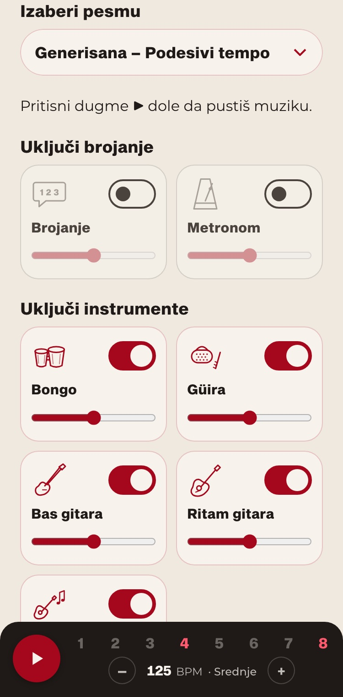
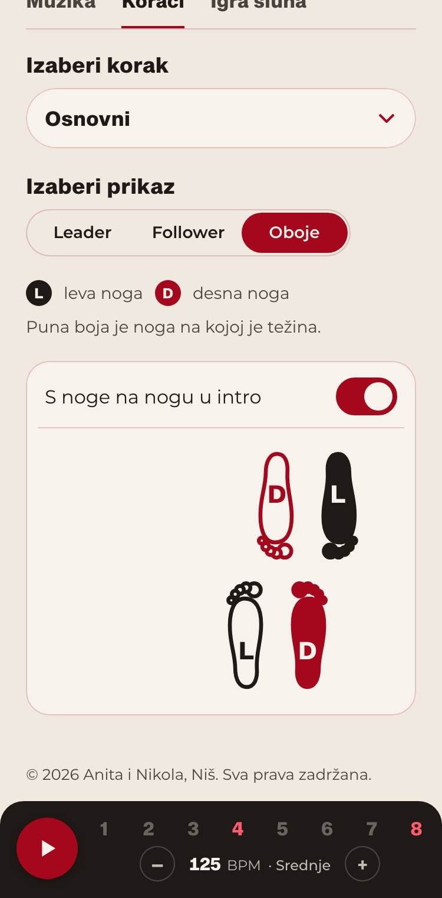
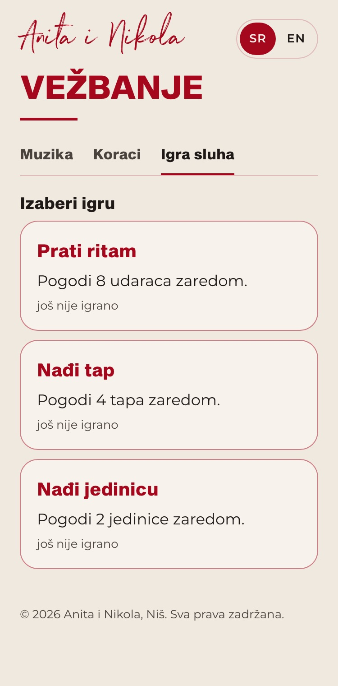

Kako izgleda

Muzika: svaki instrument posebno.

Koraci: stopala leadera i followera.

Igra sluha: tri igre za ritam.
Šta možeš da vežbaš
Muzika i ritam
Bachata pesme razdvojene po instrumentima: bongo, güira, bas, ritam gitara, lead gitara i vokal. Svaki instrument uključiš, isključiš ili utišaš, pa čuješ šta svira na kom broju.
- Brojanje od 1 do 8, na srpskom ili engleskom, i metronom.
- Traka pesme pokazuje gde je intro, a gde se igra bachata: derecho, majao i mambo.
- Generisana muzika sa tempom od 60 do 200 BPM, za vežbanje brzine.
Koraci
Animacija stopala odozgo, u ritmu muzike. Puna boja pokazuje nogu na kojoj je težina, pa se jasno vidi i tap.
- Osnovni korak, napred, u mestu, box, korak tap, dupli tap, cross back, slide i okreti na 1 i na 5.
- Prikaz za leadera, za followera ili za oboje zajedno.
- Uz pravu pesmu stopala prate delove pesme: u intru se težina prenosi s noge na nogu.
Igra sluha
Tri igre koje uče da čuješ ritam bez brojanja. Svaki nivo je druga pesma, a muzika je sve teža.
- Prati ritam: tapni na svaki udarac.
- Nađi tap: tapni na 4 i 8, tamo gde je tap.
- Nađi jedinicu: tapni na 1, početak muzičke fraze.
- Tabela najboljih za ovaj mesec i za sva vremena.
Za polaznike kluba
Aplikacija je besplatna za polaznike bachata kluba Anita i Nikola u Nišu.
Nisi polaznik? Časovi su utorkom i četvrtkom od 18:30, na adresi Bulevar dr Zorana Đinđića 38. Sve o upisu je na početnoj strani.
Česta pitanja
Kako se broji bachata?
Bachata se broji do 8: tri koraka i tap, pa još tri koraka i tap. Tap je na 4 i na 8. U aplikaciji uključi brojanje i prati brojeve na dnu ekrana, a stopala na ekranu Koraci rade isto u ritmu.
Šta je tap u bachati?
Tap je dodir podom bez prenosa težine, na brojevima 4 i 8. Igra Nađi tap uči da ga čuješ u muzici, bez brojanja.
Šta su derecho, majao i mambo?
To su ritmovi u bachata pesmi. Derecho je osnovni, ravnomerni ritam, majao ima jače akcente i najlakše se broji, a mambo je deo pesme sa najviše energije. Aplikacija ih pokazuje na traci pesme, pa čuješ kad se ritam menja.
Da li radi na telefonu?
Da. Aplikacija radi u pregledaču na telefonu i na računaru, bez instalacije. Za igru sluha koristi zvučnik telefona ili slušalice na žicu, jer Bluetooth slušalice kasne.
Kako da dobijem pristup?
Upiši se na časove, polaznici dobijaju šifru kluba. Piši nam na Instagramu @anitainikola.